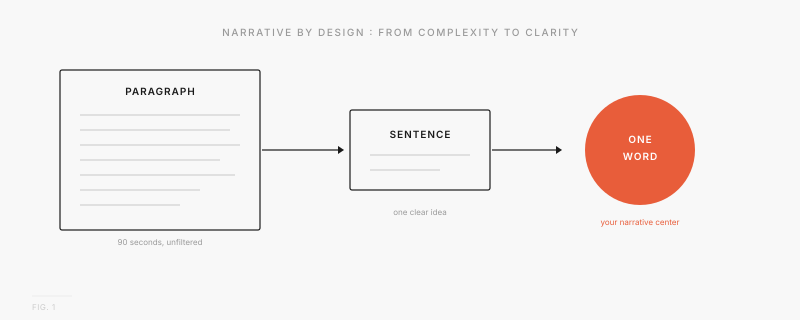
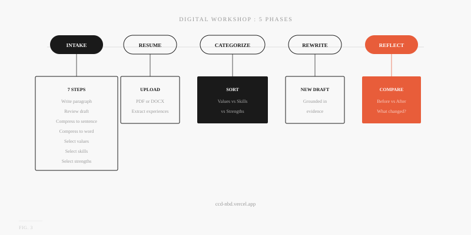
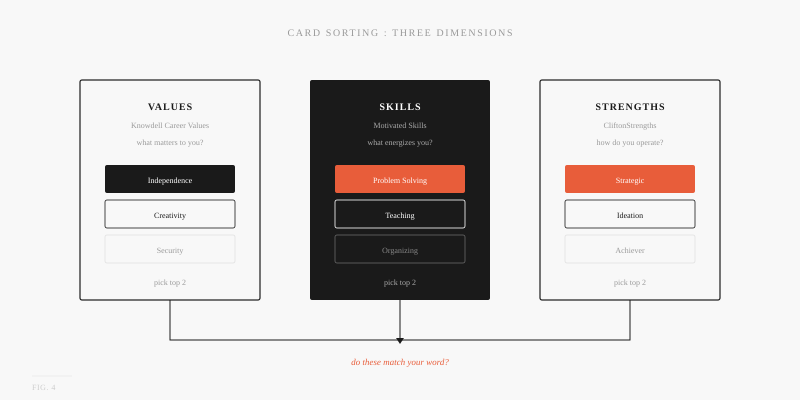
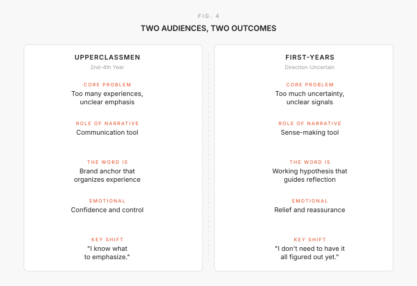
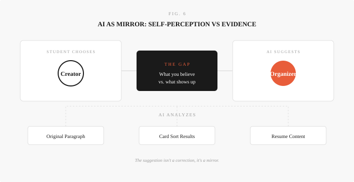
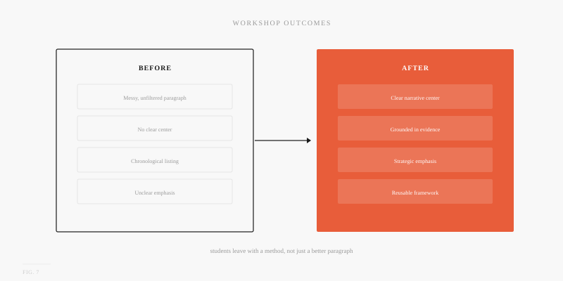
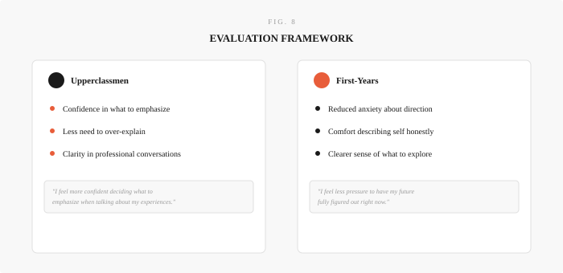

Narrative by Design
- Author
- Seth Looper
- My role
- Lead designer and workshop facilitator, as Dartmouth staff
- Past collaborators
- Lin Liu, Xiaoxi Tan (2025)
- Setting
- A Dartmouth program the author designed and ran as staff; no institutional endorsement implied
- Period
- 2024–2026
- Cohort
- Multi-term pilot at Dartmouth, 2024–2026
- Companion app
- ccd-nbd.vercel.app
- Format
- 90-minute facilitated workshop, 5 students or fewer per group
- Status
- Concluded
- Addresses
- RQ 2 · RQ 4
- Instruments adapted
- Knowdell Career Values; a strengths card sort informed by CliftonStrengths themes; Knowdell Motivated Skills
- Methods used
- Narrative compression, Card-sort triangulation, AI-as-mirror
What this report argues, how far the evidence currently goes, and what would settle it. The workshop was piloted but never evaluated, so the claims here are design rationale.
Ask a student "tell me about yourself" and you get one of two things: a chronological list of everything they've done, or a rehearsed script that sounds like everyone else. The list is too long and has no center. The script has no life in it. Neither says something true about who the student is and what drives them in a way that lands.
The gap isn't missing experience. Students have plenty. The problem is that nobody teaches them how to look at their experience, find the thread running through it, and compress it into something clear. Career services gives them resume templates and interview scripts. What they need is a method for figuring out what their story is, before they try to tell it.
Narrative by Design is not a resume-polishing session or an interview-script workshop, and it does not ask students to choose a major or career path in one sitting. It is a repeatable framework that students can return to as their experiences and goals change.

Narrative by Design is a 90-minute facilitated workshop built around one core idea: narrative compression. Students start with a messy, unfiltered paragraph about who they are. Then they cut it to a sentence. Then a single word. Each compression forces a choice. What you keep and what you drop shows what matters to you.
The workshop pairs this compression exercise with structured reflection tools, card sorts for values, strengths, and skills, that ground the narrative in evidence rather than aspiration. A companion web app (ccd-nbd.vercel.app) guides students through each phase and provides a space to do the work.
Narrative by Design is the most theoretically loaded of my tools. The workshop has three layers, each with its own anchor.
The compression sequence (paragraph → sentence → single word) is grounded in Dan McAdams's narrative identity framework (McAdams, 1993): identity is the story you keep editing, and forcing prioritization is the editing move. The single word is the smallest object that still has structure. My Compression as a method note traces why this exercise keeps appearing across my projects, and the The 90-minute constraint note explains why the format's time-pressure does pedagogical work.
The card-sort instruments (values, strengths, skills) are adapted from the Knowdell Career Values sort, a strengths card sort informed by CliftonStrengths themes (not Gallup's assessment), and the Knowdell Motivated Skills sort. They are used as evidence the student can hold up against their own narrative rather than as assessments. Card sorts are themselves a form of compression (top 10 → top 5 → top 3).
The AI-as-mirror layer is designed around Jack Mezirow's transformative learning theory (Mezirow, 1997), specifically Mezirow's "disorienting dilemma," the productive gap between how you see yourself and what the evidence shows. The AI's job is to surface those gaps and leave the resolution to the student. My AI as mirror note documents how the design choice differs from the recommendation-engine default.
The overarching frame is Burnett & Evans's Designing Your Life (2016): identity work as a repeatable design process, not a one-time decision. Full bibliography in the working paper.


The workshop moves through five phases. Each one builds on the last.


The format is the same for everyone. The design predicts different developmental targets depending on where the participant is.
Three premises that organized the workshop's design. None has been tested empirically:


Planned, not conducted. An evaluation would look not at general satisfaction but at developmentally aligned outcomes, with different questions for each group. No evaluation data were collected.

The workshop was designed to support two outcomes, which were not studied: a clearer articulation of what the participant cares about, and a clearer sense of how to communicate it to others. These are the outcomes the format optimizes for; whether the workshop produces them at the predicted strength is one of the open empirical questions documented in the working paper's §5.4.
Narrative by Design ran as a multi-term pilot at Dartmouth College from 2024 to 2026 and has concluded.
The web companion remains live at ccd-nbd.vercel.app.
Looper, S. (2026). Compression with a Witness: Narrative by Design, AI-as-Mirror, and the 90-Minute Workshop Format. Lo/Be Lab Working Reports, 2026-04. [pdf]
See the full abstract on the publications page.
Material on this site may be cited and reused under CC BY-NC 4.0, with credit to Lo/Be Lab.
For citation requests, collaborations, or pushback on a published claim, seth.looper@gmail.com. Site licensed under CC BY-NC 4.0.